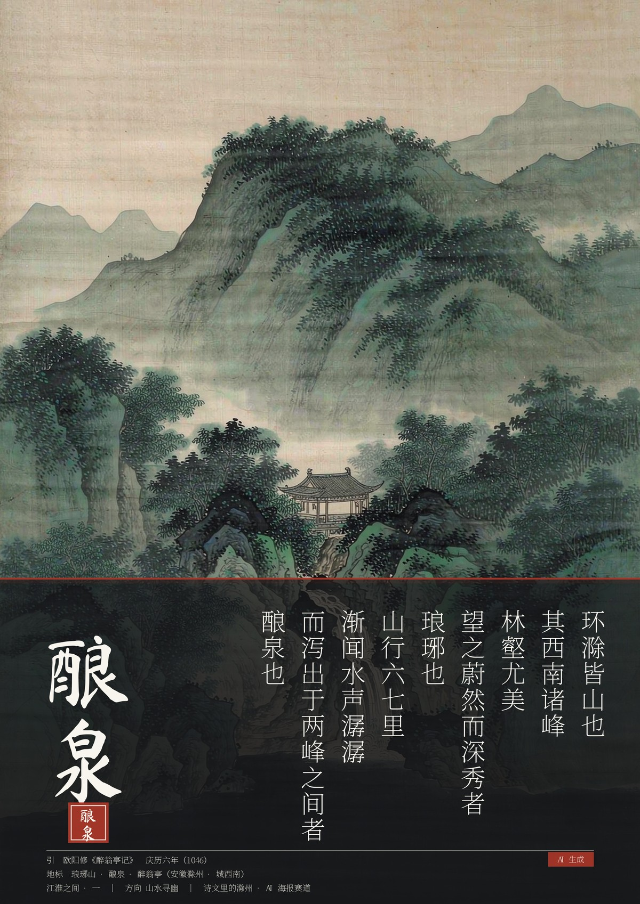
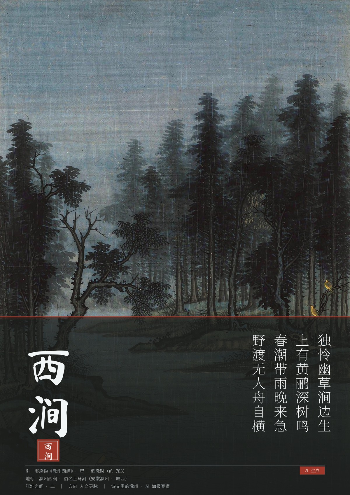
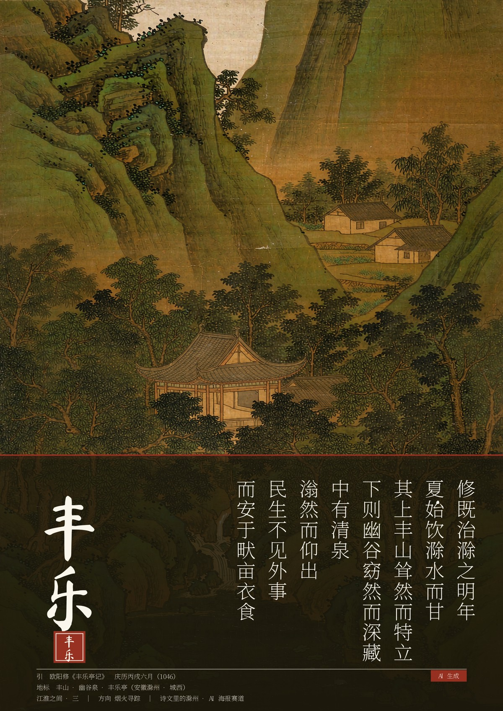

诗文里的滁州 · AI 海报赛道 · 投稿阅稿页
三处水 · 一条水线 · 2480×3508 @300dpi · 三张一组
欧阳修在《丰乐亭记》里写滁州：「今滁介于江、淮之间」。这句话是这组海报的起点。 滁州的三处水——琅琊山的酿泉、城西的西涧、丰山下的幽谷泉——各自被一首诗文钉住过一次。 三张海报把诗放进水里：水线以上是画，以下是墨池，字沉在水面下，像倒影，也像被水吞掉的句子。 水线在三张里是同一行像素（y=2245），那是这套东西唯一的硬骨架。



底图是文生图的绢本设色山水；水线、墨池、竖排引文、句读记号、朱印、页脚与「AI 生成」标签
全部由构建脚本逐字排版生成，不是手工拼的图。三张共用同一个字号（92px，由最长那一列反解），
同一个印的尺寸（156px），同一行水线（2245）——这三个数被写进 scripts/verify.py 的断言里，
改字忘了重算就会 FAIL。
交付除三张 JPG 外，另附分层 SVG 工程源文件：底图、水线、引文（真文字，不是描边）、句读、印、层名都在， 可直接在 Illustrator / Figma / Inkscape 里改字改色。